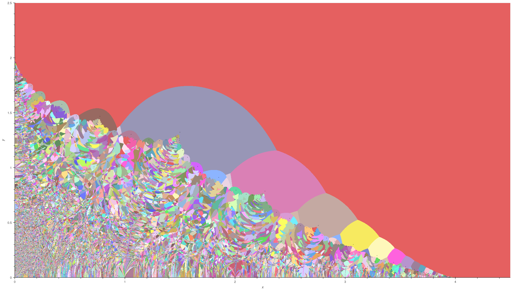
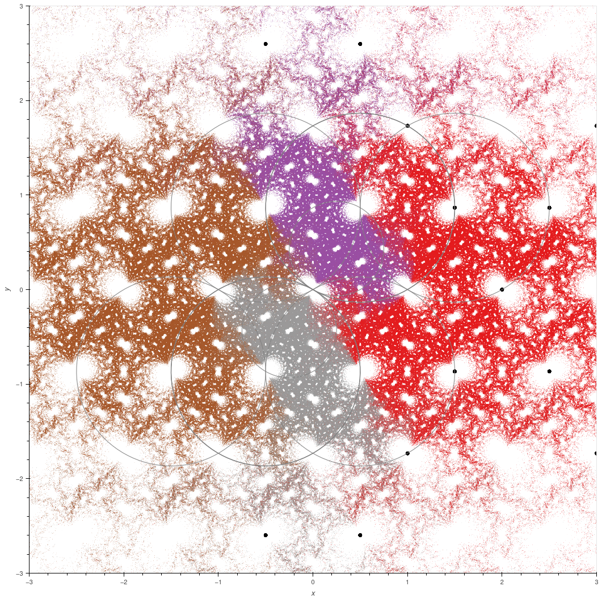

Alex Elzenaar
I (he/him) am currently in the School of Mathematics at Monash University supervised by Jessica Purcell. I usually work in between the areas of geometric
group theory, geometric topology, and metric geometry. I am particularly interested in modern classical geometry (for instance as studied by Coxeter and Thurston) and relationships with other
branches of mathematics (knot theory, number theory, algebraic geometry, complex dynamics...). I am also interested in visualisation of mathematical objects (including art) and the study of writing (mathematical
or otherwise).
Email address: alexander.elzenaar@monash.edu
Here is my Curriculum Vitae.
Oppose hundreds of job cuts at Victoria University of Wellington (and thousands nationwide)

Where is your rage now? by Emma Maguire
The Ministry of Education boss sent all staff a Sam Hunt poem – what could it mean?
She said: 'It is witty to say that a straight line is the shortest distance between two points, or that a circle is a plane figure
bounded by one line, every point of which is equidistant from a fixed centre. It is plain witty. Everyone knows what a straight line
and a circle are.'
-- Muriel Spark, The Prime of Miss Jean Brodie, p.82. Penguin Group (2010).
Older quotes
Some videos which I like include: Coxeter discusses the math behind Escher's circle limit ▫ Not Knot ▫ Mathematics as Metaphor ▫ Spirals, Fibonacci, and Being a Plant ▫ How to write mathematics badly ▫ Non-Euclidean virtual reality ▫ The Suggestive Power of Pictures ▫ Knots Don't Cancel ▫ How to make mathematical candy ▫ Maths Your Own Kaleidoscopic Shapes! ▫ Hyperbolica by CodeParade ▫ The geometries of 3-manifolds
Some other geometric things which interest me: some sculptures around Pōneke ▫ Hilma af Klint at the City Gallery in 2021-2022 ▫ Robin White: Making of That Vase ▫ Energy Work: Kathy Barry/Sarah Smuts-Kennedy ▫ "Rita" by Quentin Angus ▫ Patrick Pound at City Gallery Wellington ▫ Len Lye: A Colour Box, Colour Cry, Kaleidoscope ▫ A Painter's Journey: Rita Angus' Central Otago ▫ Solving Pale Fire ▫ The fiction of Borges
Look at these other people: Ari Markowitz, \( \mathbb{H}^3 \) group action visualiser and Bruhat-Tits tree visualiser ▫ work of David Groothuizen Dijkema
When I was an undergraduate at the University of Auckland I maintained a bibliography of short remarks about books.
Publications and preprints
- Preprint: Alex Elzenaar, Jianhua Gong, Gaven Martin, and Jeroen Schillewaert. "Bounding deformation spaces of 2-generator Kleinian groups", 2024. arXiv:2405.15970 [math.CV].
- Preprint: Alex Elzenaar and Shayne Waldron. "Putatively optimal projective spherical designs with little apparent symmetry", 2024. arXiv:2405.19353 [math.CO].
- Proceedings article: Alex Elzenaar, Gaven Martin, and Jeroen Schillewaert. "Concrete one complex dimensional moduli spaces of hyperbolic manifolds and orbifolds". In: 2021-22 MATRIX annals. Ed. by David R. Wood, Jan de Gier, Cheryl E. Prager, and Terrence Tao. MATRIX Book Series 5. Springer, 2024, pp. 31–74. DOI: 10.1007/978-3-031-47417-0_2. Preprint version: arXiv:2204.11422 [math.GT]. Corrected preprint: PDF.
- Journal article: Alex Elzenaar, Gaven Martin, and Jeroen Schillewaert. "The combinatorics of the Farey words and their traces." In: Groups, Geometry, and Dynamics. Accepted, to appear. Preprint version: arXiv:2204.08076 [math.GT]. Corrected preprint: PDF.
- Journal article: Alex Elzenaar, Gaven Martin, and Jeroen Schillewaert. "Approximations of the Riley slice." In: Expositiones Mathematicae 41 (2023), pp. 20–54. DOI: 10.1016/j.exmath.2022.12.002. Preprint version: arXiv:2111.03230 [math.GT]. Corrected preprint: PDF.
Selected talks
Here is material (e.g. lecture notes, slides) from selected talks I have given.
- 24 July 2024: Is \( \mathrm{PSL}(2,\mathbb{Z}) \) discrete?, in the Topology Seminar (Monash University), slides.
- 17, 18 July 2024: MATHS 782, lecture notes for lecture 1b (surfaces), lecture notes for lecture 2a (conformal maps), miscellaneous problems; some books
- July-August 2023: Minicourse on knot theory and geometry (Uni. of Auckland), see below.
- 10 May 2023: The dynamic in the static: Manifolds, braids, and classical number theory, in the RePS at Universität Leipzig, slides.
- 17 to 20 January 2023: Apocrypha and ephemera on the boundaries of moduli space, a minicourse at the Uni. of Auckland (also 7 December 2022 at MPI). See below!
- 10 October 2022: Uniformisation, equivariance, and vanishing: three kinds of functions hanging around your Riemann surface, at MPI, Lecture notes.
- 21 September 2022: What is a Kleinian group?, a talk aimed at undergraduates and beginning postgraduate students in the Australian Postgraduate Algebra Colloquium, slides, recording.
- 15 July 2022: On the MathRepo page "Farey Polynomials", in the MathRepo: Data for and from your Research event (MPI MIS), slides.
- 4 May 2022: Pictures of hyperbolic spaces, in the Discrete Mathematics and Geometry Seminar (TU Berlin), slides.
- 27 April 2022: Strange circles: The Riley slice of quasi-Fuchsian space, in the Seminar on Nonlinear Algebra (MPI MIS), slides.
- 17 March 2022: Strange circles: The Riley slice of quasi-Fuchsian space, in Pedram Hekmati's seminar on moduli spaces (Uni. of Auckland), slides.
- 6 December 2021: The Farey polynomials, for the Groups and Geometry retreat on Waiheke Island, presentation slides.
- 2 December 2021: The Riley slice, contributed talk for the MATRIX workshop on groups and geometries, presentation slides, recording.
- 8 June 2021: Some properties of \(2 \times 2 \) matrices, in the UoA Dept. of Mathematics Student Research Conference, extended abstract, presentation slides.
- Very rough lecture notes for the graduate seminar I taught on Kleinian groups in Semester 1, 2021: PDF 1,
PDF 2, further reading list, and post-mortem.
- 1 April 2021: Real varieties of spherical designs, in the Algebra and Combinatorics Seminar (Uni. of Auckland), presentation slides.
Deformation spaces of rank two Kleinian groups


A rank two Kleinian group is a discrete subgroup of \( \mathrm{PSL}(2,\mathbb{C}) \) generated by two elements. If the group is non-elementary, then it is related in complicated and interesting
ways to hyperbolic 3-orbifolds that have boundary at infinity consisting of a genus two Riemann surface.
A graph curve is an algebraic curve consisting of a number of thrice-marked spheres, each marked point corresponding to a node (a transverse intersection of two components). Each graph curve
of genus two comes from a trivalent graph on two vertices and three edges. There are exactly two such graphs: the theta graph (each edge joins both nodes), and the handcuff graph (one edge
joins the nodes, and the others begin and end on the same node). Both of these graphs are homotopy retracts of the genus two handlebody. Therefore there are only two graph curves of genus two.
On the edge of the deformation space of 3-manifolds with genus two surface at infinity there lie manifolds with the same configuration of spheres at infinity: pairs of thrice-punctured spheres with
rank one cusps, with incidence graph a trivalent graph with two vertices and three edges (the incidence graph has vertices correspoding to topological components of the surface and edges corresponding
to nodes).
By Thurston's ending lamination theorem (proved for this special case by Minsky and Miyachi), on the boundary of the 3-manifold space you get a different limit for each choice of embedding of the
trivalent graph into the handlebody, and you can also take limits of such choices to get 'degenerate' orbifolds—the graphs might even be knotted! Conversely every boundary point arises in this way.
So there is a very complicated map from the space of these boundary groups (which is basically a Teichmüller space, up to a small quotient) to the space of graph curves (which has two points).
It turns out that this complicated map is basically reflecting the geometry of two-bridge links. Manifolds on the boundary that correspond to handcuff graphs arise from two-bridge links
with two components, and manifolds corresponding to theta graphs arise from two-bridge knots. The knots do not live inside the deformation spaces, but they lie on tendrils of discrete groups that creep
out beyond the moduli spaces.
The Riley slice is the space of Kleinian groups generated by two parabolic elements such that the quotient manifold is a Conway ball: a 3-ball with two arcs drilled out. Choosing a way of arranging
these arcs into a rational tangle is equivalent to picking a simple closed curve on the boundary sphere; suppose that this curve is represented by a hyperbolic element \( W_{p/q} \) with trace
\( \mathrm{tr}\, W_{p/q} < -2 \) in the holonomy group of the manifold (actually, you need to pick the correct component of the set of points where this word is hyperbolic, but this is immaterial for the
time being). The boundary of the deformation space can be reached by smoothly deforming \( W_{p/q} \) until it is parabolic (trace equals \( -2 \)).
Keep deforming \( W_{p/q} \) so that its trace decreases; the group is no longer discrete except sporadically, and these discrete groups correspond to replacing the parabolic arc with a cone arc. Eventually
you reach \( \mathrm{tr}\, W_{p/q} = 2\), and in fact \( W_{p/q} = 1 \). You have now reached the fundamental group of the \( p/q \) 2-bridge link. The arc (which has now vanished to become a solid part of the knot
complement) is an upper or lower unknotting tunnel for the knot; and the point on the boundary of the deformation space where this arc was parabolic corresponds to the manifold where both the knot and the
unknotting tunnel have been drilled out as parabolic arcs from \( \mathbb{S}^3 \).
If this sounds interesting:
- You might want to start with our expository article Concrete one complex dimensional moduli spaces of hyperbolic manifolds and orbifolds (joint work
with Gaven Martin and Jeroen Schillewaert) which we wrote to give historical and mathematical background: we aimed for this to be accessible to beginning graduate students with only
a little complex analysis and topology knowledge.
- (To appear) A comprehensive study of the groups generated by pairs of parabolic and elliptic elements, following work of Keen and Series and various others (joint with Martin and Schillewaert).
- Various authors have written papers in different areas. Some of the most important to us include The Riley slice of Schottky space (Keen
and Series), Parabolic representations of knot groups (Riley), Classification of non-free Kleinian groups generated by two parabolic transformations (Akiyoshi, Ohshika, Parker, Sakuma and Yoshida), Cusps in complex boundaries of one-dimensional Teichmüller space (Miyachi), and The tree of knot tunnels (Cho and McCullough). We included a longer (but still not close to comprehensive) list of historical references in the expository article we linked above.
- Work related to the discreteness problem: Approximations of the Riley slice (joint with Martin and Schillewaert); Bounding deformation spaces of 2-generator Kleinian groups (joint with Gong, Martin, and Schillewaert)
- A detailed abstract combinatorial study of certain polynomials which control the geometry of these groups: The combinatorics of Farey words and their traces (joint with Martin and Schillewaert).
- Brief note on the relationships between moduli of Schottky groups and moduli of algebraic curves, see also below.
Seminar on deformations of infinite volume hyperbolic 3-folds

Henry Moore: Bronze Form (1988). In situ, Wellington Botanic Garden ki Paekākā.
In July 2024 (University of Auckland) and possibly August 2024 (Monash University) I will teach a seminar on the deformation theory of infinite volume hyperbolic
3-manifolds;
abstract and background. Notes will appear here. We will cover similar material to
Apocrypha and ephemera
on the boundaries of moduli space as described below but in much more technical detail. Students who have studied differential geometry and complex analysis
are welcome to attend.
Manifesto.
We look for a computable, geometrically meaningful coordinate system for the space of representations
\( \pi_1(M) \to \mathsf{PSL}(2, \mathbb{C}) \) where \( M \) is a hyperbolic 3-fold. Work of Thurston, Keen and Series, Gilman,
Maskit, Kra, Marden, Akiyoshi, Sakuma, Wada, Weeks, Yamashita et cetera gives us hope that such
a coordinate system exists for discrete and faithful representations, and that continued deformation
of groups along extensions of coordinate lines continues to give meaningful information about indiscrete groups which represent geometrically related cone manifolds.

2023 seminar: Apocrypha and ephemera on the boundaries of moduli space
I taught a minicourse at UoA from
16 17-20 Jan 2023. The goal was to explain the rough structure of the following equivalent
objects: (i) the moduli space of Schottky groups; and (ii) the space of hyperbolic 3-manifolds with visual boundary a compact Riemann surface (handlebody). In the process we will learn some of
the Birman theory of braid groups, some knot theory, some of the quasi-conformal deformation theory of Kleinian groups, and a lot of geometric topology. The only prerequisite is comfort thinking
about quotients in metric spaces and some algebraic topology, but we will go fast and so you should expect to lose track of some details fairly quickly. To try to fix this I will also be handing
out problem sheets (which will include some "basic" problems, some research level problems, and some computational problems). Each lecture should also be fairly self-contained. People who attended
the graduate seminar/course I taught in Sem 1 of 2021 will find things easier but it is not necessary at all for you to have followed that. The talk in
Nelson
by Benson Farb is also very good preparation.
I anticipate 5 lectures, at 2PM every day in 303.257 (this schedule is only guaranteed for the first talk, I think some of the more enthusiastic people will want more time to discuss the ideas and
so we will wing it as we go). The lectures will be:-
- A crash course in Kleinian groups problems
- Sociology problems
- B-groups and other degeneracies problems
- Braids, links, and mapping class groups
- ???
I have written some
rough notes which indicate the direction of the conjectured moduli space structure. These notes are not complete.
A zoo of Kleinian groups

There are several useful 'zoos' of Kleinian groups with interesting properties; I collected several interesting groups and families of groups from a few sources,
and you can find their limit sets
on this page.
These images were produced using the Bella computational package for Kleinian groups. (Bella stood for Better Limit Set Drawer.)
A previous version of this package: Riley slice computational package (GitHub). With this earlier package I produced
some animations, and some more limit sets. Some more visually impressive animations can be
found on the website of Emily Dumas.
Minicourse on knot theory and geometry

In July 2023 I organised a minicourse on knot theory at the University of Auckland, focusing on the representation theory of holonomy groups.
View the
abstract or download the latest version of the
notes.
There will be eight lectures over four weeks in 303.148 (for the first two weeks at least):
| Wed, 2pm | Fri, 2pm |
|---|
| Classical knot theory | 5 Jul: Basics | 7 Jul: Fundamental group |
|---|
| Geometric knot theory | 12 Jul: Knot complements | 14 Jul: Hyperbolic invariants |
|---|
| Braids | 19 Jul: Two-bridge knots | 21 Jul: Braids and mapping class groups |
|---|
| Knot polynomials | 26 Jul: Classical | 28 Jul: Quantum |
|---|
Josh Lehman gave the lecture on mapping class groups and Lavendar Marshall gave the lecture on the Alexander polynomial.
Some useful links:
Representation of algebraic curves by Schottky groups

What is a Riemann surface?
- Analytically:
- A 2-dimensional manifold (or orbifold) admitting a chart of conformal maps into \( \mathbb{C} \) with conformal transition maps.
- Algebraically:
- An algebraic curve over \( \mathbb{C} \).
- Geometrically:
- The quotient of a 2-dimensional geometric manifold by a discrete group of isometries.
There are two kinds of theorems which relate the different viewpoints. First, theorems on rings of functions: the ring of global meromorphic functions on an analytic Riemann surface
is isomorphic to a one-dimensional function field over \( \mathbb{C} \) and defines a birationality class of algebraic varieties, setting up an equivalence between the analytic
and algebraic worlds. Secondly, uniformisation theorems. Traditionally, one uniformises general (genus \( \geq 2 \) ) analytic Riemann surfaces by Fuchsian groups,
i.e. one writes the surface as a quotient \( \mathbb{H}^2/G \) where \( G \) is a discrete group of hyperbolic isometries and is identified with the holonomy
group of the surface. However, it is also possible to uniformise all Riemann surfaces by a class of groups of isometries of \( \mathbb{H}^3 \) by considering
action on the boundary at infinity.
I survey the three different worlds and some classical theorems (with many examples of Kleinian and Fuchsian groups)
in the notes Uniformisation, equivariance, and vanishing—Three kinds of functions hanging around your Riemann surface.
In addition, some thoughts on relationships between moduli of Schottky groups and moduli of algebraic curves. Notes
on \( G \)-automorphic functions for \( G \) Kleinian.
What do Schottky groups look like over more general objects? Schottky groups over \( \mathbb{Q}_p \).
Lorentzian polynomials and algebraic geometry on matroids
If \( X \) is a sufficiently nice variety, the Chow group \( A^*(X) \) provides a homology theory on \( X \); in fact, it admits a ring structure coming from the intersection product. It turns out
that such a theory can be made to work on more general spaces, for example one can define a Chow ring for matroids; then the various Hodge-type results (Poincaré duality, the hard Lefschetz theorem,
and the Hodge-Riemann relations) carry over. Various nice polynomials can be defined with respect to this generalised Hodge theory and the associated cones of 'ample divisors' (which turn out
to be submodular functions); these are the
Lorentzian polynomials of Brändén and Huh.
A Day of Geometry and Lorentzian Polynomials
At the end of May 2022 there was a
seminar at the Institut Mittag-Leffler on the work of Branden, Huh, Katz, and various
other people on Lorentzian polynomials and the geometry of matroids; before this event on
Tuesday 24 May, I organised a very informal Zoom workshop on some of the geometric background
material.
Abstract.
Even if you do not know what Lorentzian polynomials are, you may have heard of Minkowski volume polynomials, the polynomials of the form \( \mathrm{vol}(x_1 K_1 + \cdots + x_n K_n) \)
where \( K_1,\ldots,K_n \) are convex bodies—and these are somehow the "canonical examples" of Lorentzian polynomials. The goal of the workshop is to give many different examples of Lorentzian
polynomials arising in geometry. The talks will be very informal, non-technical, and have many pictures.
The final schedule was as follows (all times are CET). Many of the speakers have kindly allowed me to share their slides and/or lecture notes.
- 9.30am—Matroids and chromatic polynomials (Tobias Boege, MPI MiS): Slides
- 10:15am—Varieties over C and embeddings into projective space via elliptic curves (Lukas Zobernig, The University of Auckland): Slides
- 11:00am—Hyperbolic polynomials (Hisha Nguyen, V.N. Karazin Kharkiv National University)
- Break (hopefully the morning talks are finished by 11:45, or 12 at the latest if we run over time).
- 1:30pm—Convex geometry & mixed volumes (Mara Belotti, TU Berlin): Slides
- 2:15pm—Projective varieties over \( \mathbb{C} \) (Alex Elzenaar, MPI MiS): Slides
Some background material
Spherical designs

A spherical \((3,3)\)-design in \( \mathbb{R}^3 \) of 16 vectors.
Spherical \((t,t)\)-designs are arrangements of points on the sphere (possibly with weights) which are spaced 'far apart from each other': they are finite sets in \( \mathbb{R}^d \)
such that the integral over the sphere of each homogeneous polynomial of degree \(2t\) in \( d \) variables is equal to its average value on the set. There are generalisations
of this definition to subsets of \( \mathbb{C}^d \) and \( \mathbb{H}^d \) (the \(d\)-fold product of the Hamiltonian quaternion algebra, not hyperbolic \(d\)-space!).
Optimal designs and near-designs
Shayne Waldron and I have a paper in preparation:
Putatively optimal projective spherical designs with little apparent symmetry,
computing various spherical designs in order to find those of minimal order; a large set of designs and near-designs are archived on on Zenodo
at
DOI: 10.5281/zenodo.6443356. You can look at the code used to generate these
on
GitHub; it uses the
Manopt optimisation toolbox. This work was was funded in
part by a University of Auckland Summer Research Scholarship (2019-20). You can view the
final report for the scholarship.
Spherical designs and sums of squares
BSc(hons) dissertation and MSc thesis

I completed my BSc(Hons) dissertation in 2020 under the supervision of Dr. Jeroen Schillewaert.
My
Master of Science thesis was completed in 2021-22 in the Department of Mathematics at the
University of Auckland, under the supervision
of Dist. Prof. Gaven Martin (NZ Institute of Advanced Study, Massey University) and Dr. Jeroen Schillewaert.
For more information see
the section on deformation spaces above.